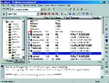
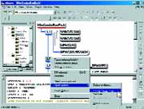

Система конкурирующих версий
Андрей Гапанович, 6.8.2003, Computerra.ru
Зачастую
изменения, только что внесенные в код программы, оказываются
неудачными, и возникает естественное желание вернуться к
первоначальному варианту. Бывает и так, что на первый взгляд изменения
были удачными, но по прошествии некоторого времени, иногда довольно
продолжительного, выясняется, что в результате появилась ошибка,
которой не было раньше. В этом случае хорошо было бы сравнить старый
код с новым, чтобы обнаружить источник ошибки.
Человек, впервые столкнувшийся с такими
проблемами, начинает делать резервные копии в надежде на то, что в
следующий раз он сможет восстановить первоначальный код. Разумеется,
резервные копии полезны, хотя бы по той причине, что однажды данные на
жестком диске, а вместе с ними и плоды ваших трудов могут быть утеряны.
И все же пользоваться ими не слишком удобно. Во-первых, не всегда
удается вспомнить, когда делались те или иные изменения. Во-вторых, не
успеешь и глазом моргнуть, как резервные копии заполонят все дисковое
пространство, особенно если проект крупный.
Со всеми этими недостатками прекрасно
справляется система управления версиями CVS (Concurrent Versions
System), которая позволяет хранить все версии вашего кода, причем
сохраняя только изменения, а не весь код. Кроме своей основной функции,
она может объединять изменения, сделанные разными разработчиками в
одном модуле, сравнивать версии файлов, вести протокол изменений,
одновременно работать с несколькими версиями программы и многое другое.
Как и многие другие полезные программы, CVS
впервые появилась в Unix. Сейчас ее можно использовать под различными
платформами, в том числе под Mac OS и Windows. Первая версия CVS
запускалась только из командной строки. Позже появилась надстройка с
графическим интерфейсом. Для платформы Windows такой надстройкой
является WinCVS, которую можно скачать с www. wincvs.org. Она включает,
в частности, утилиту командной строки, так что приверженцы последней
могут работать и без графической оболочки. Оболочка предоставляет более
удобный для пользователя интерфейс и вызывает ту же самую утилиту.
Результаты работы утилиты опять-таки представляются в более удобном
виде.
Первое, что нужно сделать после установки
WinCVS, - задать каталог, в котором будут храниться изменения. Для
этого выберите пункт меню Admin Х Preferences и на закладке General,
там, где написано Enter the CVSROOT, введите путь к каталогу. Кроме
того, рекомендую на закладке Globals снять птичку Checkout read-only. В
противном случае извлеченные файлы будут иметь атрибут «только для
чтения». Все остальные настройки можно оставить без изменений и
приступать к работе с программой.
 Прежде
всего, необходимо импортировать ваш проект в CVS (программа создаст
новый модуль, соответствующий проекту, и скопирует нужные файлы в
указанный вами каталог). Для этого на закладке Explore выберите каталог
с файлами проекта и затем пункт меню Create Х Import module from
selection. CVS просканирует каталог (включая подкаталоги) и представит
список обнаруженных типов файлов (соответствующий списку расширений).
При этом для каждого из них программа предлагает свой способ работы на
основе анализа содержимого. Если содержимое похоже на текст, CVS
предлагает добавить в модуль такие файлы как текстовые, в противном
случае - работать с ними как с двоичными. Разница в том, что для
текстовых файлов программа может проанализировать две версии одного
файла и сохранить только изменения, сделанные в более поздней версии.
Для двоичных файлов она этого делать не умеет и потому может только
сохранить последнюю версию файла целиком. Самые интересные возможности
CVS в основном доступны только для текстовых файлов, поэтому хранить
двоичные файлы не имеет смысла (многие из них создаются в процессе
компиляции, и хранить их вообще не нужно). Иногда программа ошибочно
полагает, что файл является двоичным, хотя вы запросто можете
редактировать его Notepad’e. В этих случаях следует принудительно
указать, что подобные файлы являются текстовыми. Для этого выберите
нужный тип файлов и нажмите кнопку Edit. Вы также можете указать, что
файл является двоичным или что файлы такого типа вообще должны
игнорироваться. Кроме того, можно указать, чтобы для текстовых файлов
не производилась подстановка ключевых слов (об этом ниже). В некоторых
случаях программа затрудняется выбрать способ работы с файлами, так как
одни кажутся ей похожими на текстовые, другие - на двоичные. Эти файлы
она помечает красным значком (обратите на них особое внимание). Если
способы работы с файлами всех типов вас устраивают, жмите кнопку
Continue. Программа предложит ввести имя создаваемого модуля, сообщение
для протокола и другие параметры. Можно принять все по умолчанию. После
этого в панели результатов (она располагается в нижней части окна) вы
увидите вызов CVS с параметрами и результаты работы CVS. Если команда
успешно завершилась, значит, у вас есть модуль CVS, в котором сохранена
текущая рабочая копия ваших файлов (рис. 1).
Теперь исходный код лежит в хранилище. Там,
где он был ранее, ныне находится лишь временная рабочая копия (это
важно усвоить для понимания дальнейших механизмов работы программы).
Ваш компилятор по-прежнему работает с этими файлами, но главная копия
кода - именно в хранилище. В любой момент можно удалить рабочую копию,
так как она легко восстанавливается из хранилища. Здесь предлагается
следующая модель работы с кодом: создал рабочую копию из хранилища,
поработал с нею, занес изменения в хранилище и удалил рабочую копию.
Как долго продлятся действия с рабочей копией, зависит только от
программиста. Вообще, эта модель актуальна для многопользовательской
работы. Поскольку код в любой момент может быть изменен другими
программистами, такой подход позволяет работать всегда со свежей
версией. Одному разработчику незачем постоянно восстанавливать рабочую
копию из хранилища. Но в любом случае, сразу после импорта эту операцию
проделать нужно. Для этого выберите пункт меню Create Х Checkout
module, и в открывшемся диалоговом окне укажите имя только что
созданного модуля и каталог для рабочей копии. В нем будет создан
подкаталог с именем модуля, а внутри - все файлы и каталоги, которые
были сохранены в хранилище.
Если вы внесли изменения в код, зафиксируйте
их в хранилище. Обычно фиксирование следует делать, когда вы дописали
какую-то логически завершенную часть и успешно протестировали ее.
Насколько большие изменения должны быть произведены перед очередной
фиксацией, решайте сами. Не имеет смысла делать фиксацию после
добавления каждой новой строки. Однако не стоит и дожидаться, пока код
изменится до неузнаваемости. Здесь нужно найти золотую середину. Если
вы решили произвести фиксацию, выберите пункт меню View Х Browse
location Х Change и каталог, в котором находится ваша рабочая копия.
Содержимое каталога отобразится в окне программы, и если внутри есть
подкаталоги, то дерево подкаталогов будет отображено на закладке
Modules. Те подкаталоги, в которых имеются рабочие копии файлов
хранилища, будут помечены галочками. Измененные файлы выделяются
красным цветом. По умолчанию показываются только те из них, которые
есть в хранилище. Если нужно увидеть другие файлы, смените фильтр
командой меню View Х File filter.
Чтобы зафиксировать изменения в файле, надо
его выделить и выбрать пункт меню Modify Х Commit selection. В
раскрывшемся диалоге напишите пару строк о том, что изменилось в файле.
В принципе, можно ничего и не писать, но лучше все же кратко пояснить
суть изменений (этот текст будет показываться при просмотре истории
изменений). После того как изменения зафиксировались в хранилище, можно
продолжить модификацию кода. Обратите внимание, что после фиксации
изменилась версия файла, отображаемая в колонке Rev. Каждый файл имеет
свою версию, которая не связана ни с версиями других файлов, ни с
версией вашей программы. Это всего лишь уникальный номер, состоящий из
последовательности чисел и точек, который присваивается файлу после
каждого изменения. Принцип формирования номера нас не волнует. Главное,
что он позволяет извлечь каждую версию файла.
Ориентироваться в номерах версий, не несущих
почти никакого смысла, трудновато, поэтому разработчики CVS
предусмотрели возможность назначать метки определенным версиям файлов.
Имя метки может состоять из любой последовательности латинских букв,
цифр, символов подчеркивания и дефисов - по усмотрению программиста.
Чтобы назначить метку, надо выделить файл и выбрать пункт меню Modify Х
Create a tag on selection. Одна метка может присваиваться сразу
нескольким файлам. Аналогично можно фиксировать изменения в нескольких
файлах за один раз. Можно вообще выделить каталог с рабочей копией
файлов, чтобы действие распространялось на все файлы. Метка для каждого
файла связывается с его текущей версией. Файл можно извлекать и по
метке, и по номеру версии. После завершения каких-то знаменательных
изменений (например, при выходе новой версии программы) имеет смысл
пометить все файлы проекта. Тогда в будущем вы легко сможете получить
те файлы, из которых была скомпилирована данная версия.
Когда вы извлекаете рабочую версию из
хранилища, то по умолчанию выбираются последние версии файлов, если
каталог для извлечения пустой. Чтобы извлечь помеченные файлы,
необходимо в диалоге на закладке Checkout options поставить галочку By
revision/ tag/branch и рядом ввести имя метки. Там же можно указать
номер версии вместо метки или извлекать файлы с определенной датой. Но
учтите: изменив после такой операции файлы рабочей копии, вы не сможете
зафиксировать изменения в хранилище - там уже зафиксированы другие.
Теперь представим такую ситуацию. После долгой
работы над проектом вы, в конце концов, выпускаете рабочую версию
программы и отдаете ее на растерзание пользователям. Однако осталось
еще много возможностей, которые вам хотелось бы реализовать, и вы
начинаете писать следующую версию. По прошествии времени пользователи
обнаруживают в программе ошибки. Выпускать новую, с исправлениями,
слишком рано, она еще сыровата. В этом случае вас выручат ответвления.
Ответвление напоминает метку, но есть и
большое отличие. Вообще говоря, историю версий можно представить как
дерево. До тех пор пока вы не создаете ответвлений, оно похоже на голый
ствол и метки просто указывают на его отдельные участки. Ответвление
тоже помечает определенный участок ствола, но из этого места потом
сможет вырасти отдельная ветка. То есть от него можно будет вести
альтернативную версию программы, и вы сможете изменять эти версии
файлов и фиксировать их изменения в хранилище.
Чтобы создать ответвление, выделите нужные
файлы, выберите пункт меню Modify Х Create a branch on selection и
введите в диалоговом окне имя ответвления. После этого можете дальше
развивать свою программу. Когда возникнет необходимость подправить
что-то в предыдущей версии программы, вы сможете извлечь нужные версии
файлов, указав имя ответвления там, где указывали имя метки. Теперь
файлы можно изменять и фиксировать изменения в хранилище. А главное,
что CVS может добавлять их автоматически. Для этого после фиксации
изменений ветки нужно очистить рабочий каталог. Выделите его (он
помечен галочкой) и выберите пункт меню Trace Х Release selection. В
открывшемся диалоге поставьте птичку Remove working copy. Затем
извлеките рабочую копию из хранилища, не указывая имя метки или
ответвления. Будут извлечены последние версии ваших файлов на главном
стволе. Теперь выберите пункт меню Modify Х Update selection и на
закладке Merge options поставьте галочку Only this rev./tag, а рядом
введите имя ответвления. После этого изменения, сделанные в
ответвлении, будут добавлены в основной ствол.
Есть, правда, один нюанс. Если и в
ответвлении, и в основном стволе были различные изменения на одном и
том же участке, то возникнет конфликт, так как CVS не сможет
определить, какие изменения следует оставить. В этом случае конфликтные
файлы отмечаются специальным значком, а внутри файла будут содержаться
оба варианта изменений. Места конфликтов в файле помечаются следующим
образом:
<<<<<<< FILENAME
VARIANT1
=======
VARIANT2
>>>>>>> BRANCH_REVISION
Кроме того, исходный файл записывается в
рабочий каталог под именем, включающем исходное имя файла и номер его
версии до слияния. Программист сам должен решить, какую версию
изменений оставить. После разрешения всех конфликтов остается лишь
зафиксировать изменения в хранилище.
Теперь рассмотрим ситуацию, когда с кодом
работает сразу несколько программистов (для простоты договоримся, что
их двое). Каждый из них должен прежде всего извлечь отдельную рабочую
копию из хранилища, дабы иметь дело с наиболее свежей версией файлов.
По мере редактирования файлов образуется две ветви изменений. Когда
один из программистов решит зафиксировать изменения в хранилище, у него
не возникнет никаких проблем. Но вот второму CVS не позволит этого
сделать, так как своими изменениями он уничтожит те, что сделаны первым
программистом. Дабы выйти из такого положения, второму программисту
необходимо слить изменения, сделанные им и первым программистом. Для
этого нужно выбрать пункт меню Modify Х Update selection. После
успешного слияния и разрешения конфликтов он может зафиксировать
изменения в хранилище. Теперь уже первый программист не сможет
зафиксировать свои дальнейшие модификации без предварительного слияния
изменений. Таким образом, над одними и теми же файлами могут работать
несколько человек одновременно. Замечу, что при совместной работе
необходимо фиксировать изменения как можно чаще, чтобы возникало
поменьше конфликтов.
По мере работы над проектом могут появляться
новые файлы и удаляться уже существующие. По умолчанию отображаются
только те файлы, которые были занесены в хранилище при импорте. Если вы
хотите увидеть остальные, следует выбрать другой фильтр (меню View Х
File filter). Чтобы поместить новый файл в хранилище, нужно выделить
его и выбрать пункт меню Modify Х Add selection или Modify Х Add
selection binary, если файл двоичный. Теперь CVS будет сохранять
историю и для этого файла. Чтобы удалить ненужный файл, надо выделить
его и выбрать меню Modify Х Remove selection. Файл не будет уничтожен,
просто CVS отметит, что он больше не используется (однако вы сможете
извлечь его более раннюю рабочую копию). Аналогично обстоит дело и с
добавленными файлами. Переименовать файл нельзя. Для этого нужно его
удалить и затем добавить с новым именем. Тем же макаром можно добавлять
и удалять каталоги. (Внимание! Радикально изменить структуру каталогов,
в которых находятся файлы, весьма затруднительно, так что продумайте ее
заранее.)
 Для
каждого файла можно посмотреть его статус, историю, дерево изменений,
сравнить две версии, дабы уяснить, чем они отличаются. Выберите пункт
меню Query Х Status selection. Там вы можете узнать номер текущей
версии, все метки и ответвления файла и посмотреть, каким номерам
версий они соответствуют. Для просмотра истории изменений выберите
пункт меню Query Х Log selection. При этом в хронологическом порядке
можно увидеть информацию о каждой версии файла. Для каждой версии
указывается, сколько строк было добавлено и сколько удалено; дата и
время фиксации изменений; пояснения, которые были введены при фиксации;
имя пользователя, производившего фиксацию; какие ответвления от этой
версии существуют. Чтобы сравнить версию файла в рабочем каталоге с
версией в хранилище, выберите пункт меню Query Х Diff selection. Вам
будут показаны все различия между ними. Если выбрать пункт меню Query Х
Graph selection, то можно увидеть все версии файла в виде дерева,
ответвления на котором показаны отдельными ветками. Кроме того, на нем
указаны все метки, назначавшиеся для файла. Выбрав версию, можно узнать
информацию о ней, сравнить ее с текущей версией, извлечь ее из
хранилища и т. п. (рис. 2).
Еще одна интересная возможность - подстановка
ключевых слов. Например, если в тексте файла встречается строка вида
«$Date: …$», то в этом месте будет вставлена дата модификации файла.
Таким же способом можно добиться, чтобы в тексте файла присутствовал
номер версии, история изменений и др. Я не буду подробно описывать все
возможные варианты и их синтаксис. Вы без труда найдете их в справочных
файлах. В некоторых случаях подстановка ключевых слов нежелательна -
может, строка именно такого вида должна присутствовать в коде и не
должна изменяться. Для подобных файлов при импорте нужно указывать
Force no keyword expansion, тогда ключевые слова подставляться не будут.
Более подробно о возможностях CVS (и WinCVS)
вы можете узнать из справочной системы. Я лишь расшифрую термины,
использующиеся в программе:
- repository - хранилище;
- revision - версия;
- tag - метка;
- branch - ответвление.
Русскую версию справки для CVS можно найти, например, на linux.perm.ru/doc/devel/tools/CVS/cvs-ru_toc.html.
|